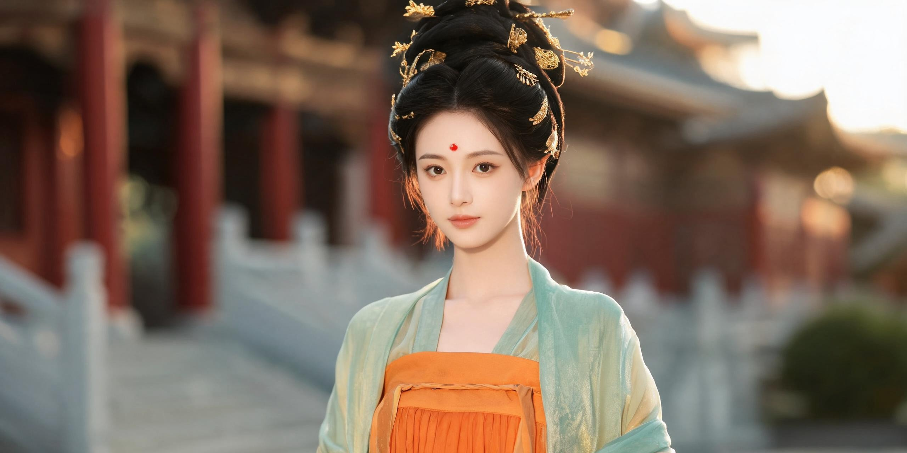
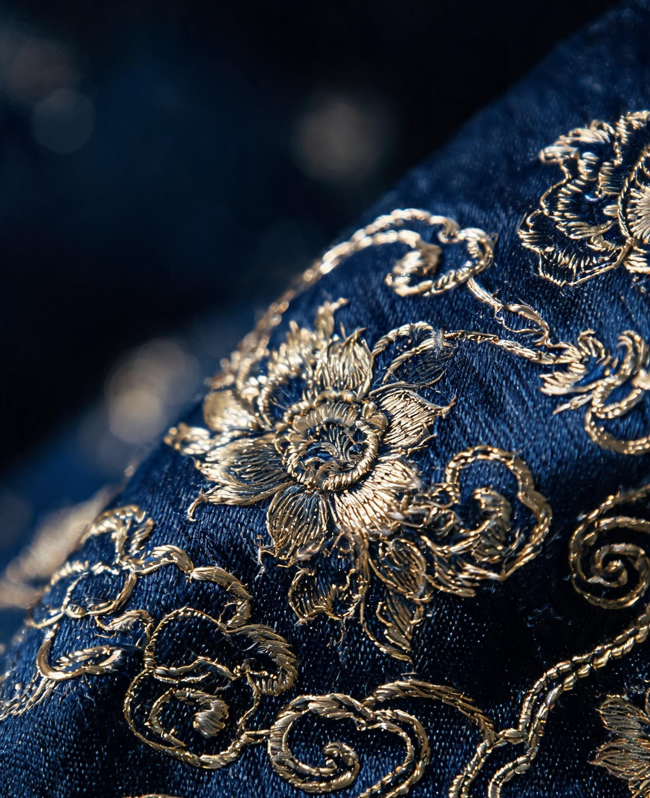
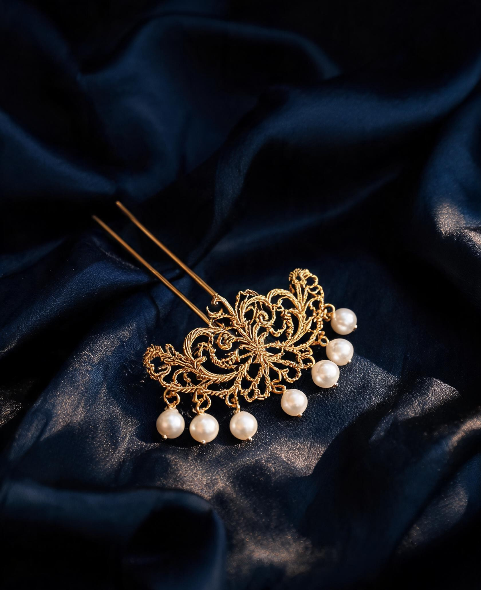

Tang · Song · Ming
Wear a
thousand years.
Upload one photograph. Receive a portrait of yourself in historically researched Chinese robes — robe, hair, makeup and setting matched to the dynasty.
AI-generated, human-directed · Delivered within 48 hours
The process
Three photographs, three dynasties, one sitting.
-
01
A photograph
One full-body photo from your phone. Daylight, a plain wall, arms slightly away from your body.
-
02
A dynasty
Choose Tang, Song or Ming. We build the robe, hair, makeup and setting around the period's real construction.
-
03
A proof, then the set
You see one free frame made from your own face before paying anything. Then nine finished images at 4K, colour-graded and proofed by a person, within 48 hours.
Collections
Three dynasties, three ways to be dressed.
Each set is researched against extant garments and period paintings — not the costume aisle.
The craft
Historic form,
not costume.
A hanfu portrait fails the moment a collar crosses the wrong way. Every set begins with the garment's real construction: the right lapel laid over the left, the correct number of pleats, the hair that belongs to the era.
Only then is light, fabric and setting built around a single photograph of you — and every frame is proofed by a person before it reaches your inbox.
- Form Lapel, pleat and silhouette checked against period sources
- Fabric Gauze, brocade and couched gold rendered with real weight
- Proof Hands, eyes and identity reviewed frame by frame


Pricing
Pay once. Keep the files.
No subscription, no credits, no reprints. If a set misses, we redo it once at no cost.
How this is made
AI-generated. Human-directed.
Every image is generated with AI and then art-directed, corrected and colour-graded by a person. We will not pretend a generated image is a photograph, and every file we deliver is labelled as generated.
Your photograph is used to make your portraits and nothing else. It is never used to train a model, and it is deleted on request — or automatically after 30 days.
Questions
Before you send a photograph.
What photo do I need?
A single full-body photo, taken in daylight against a plain wall. Stand straight, arms slightly away from your body, feet visible, no filters. If a hand or foot is hidden, the portrait is much harder to get right.
How long does it take?
Within 48 hours of your photo being accepted, usually sooner. The Trio and Heirloom sets take the longest because every frame is proofed individually.
Is this a real photograph?
No. These are AI-generated portraits, art-directed by a person. That is why we label every delivered file and never describe them as photography.
What if it doesn't look like me?
Then we redo the set once, free. Send us what's wrong — the face, the body, the hands — and we rebuild from your original photo.
Do you keep my photo?
Only for as long as it takes to finish your portraits. It is never used for model training, never shared, and deleted automatically after 30 days or immediately on request.
Begin